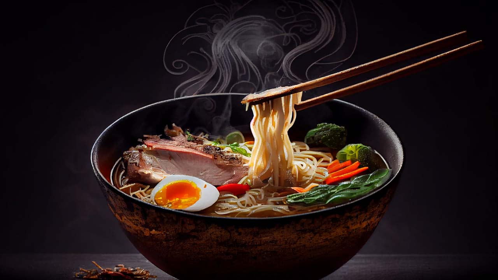

Unveiling Ramen Mastery: Crafting Authentic Homemade Noodles and Broth

Introduction:
Ramen, a beloved Japanese comfort dish, has evolved from humble
beginnings to a global sensation. While instant ramen is a convenient
option, the true magic of this iconic bowl lies in crafting it from
scratch at home. Join us on a culinary journey as we explore the art
of making homemade ramen – from hand-rolled noodles to a soul-soothing
broth that's as rich in flavor as it is in history.
Ingredients for Ramen Noodles:
All-Purpose Flour:
-
The base for the noodle dough, providing the desired texture
and elasticity.
Baking Soda (Optional):
-
Enhances the alkalinity of the noodles, creating a distinct
ramen texture.
Water:
-
Binds the ingredients and forms a smooth, workable dough.
Equipment:
Mixing Bowl:
- For combining and kneading the noodle dough.
Rolling Pin:
- To flatten and roll out the noodle dough.
Ramen Noodle Cutter or Knife:
- For cutting the rolled-out dough into noodle strips.
Large Pot:
- For boiling the ramen noodles and simmering the broth.